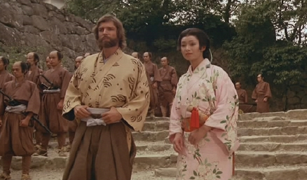

Söz Savunmanın ismiyle yayınlanan bu dizi bundan çok Petroçelli diye bilinir. Harvard mezunu İtalyan asıllı bir avukat, melek gibi bir kadın olan karısıyla Amerika’ya taşınmışlardı. Bir kovboy arkadaşıyla birlikte zor davaları çözmeye çalışıyordu. Fakat yoksul insanların davalarına ücretsiz baktıkları için fazla para kazanamıyorlardı. Bir karavanda yaşarlar, bu arada kendi evlerinin inşasıyla uğraşırlardı.
İhtiyar Delikanlı: Yaşı hayli geçkin bir dedektif, gelininin yardımlarıyla olayları çözerdi.
Los Angeles'ta gayet geniş bir büroda çalışan kalabalık bir avukatlar grubu vardı. Kanun Kanundur adlı bu dizide mahkeme salonlarında yaşananlar gösterilirdi. Ayrıca kendi aralarındaki problemler de dizinin temalarındandı. Birbirlerinden hoşlanırlar, evlenirler, boşanırlardı.
Matlock: Yaşını başını almış bir avukattır. Üzerinden çıkarmadığı beyaz takım elbisesi ve mahkeme salonunda çok ilginç ve yaratıcı şekilde davaları çözerdi. Asistanlığına da kızı yapar, babasına yardımcı olurdu.
Zıt karakterde iki dedektif olan Simon kardeşlerin maceralarını anlatan Simon&Simon bir polisiye diziydi. Sürekli olarak olayın nasıl çözüleceğine dair fikir ayrılığı yaşarlardı. Biri hukuk fakültesi okumuş takım elbiseli bir tip, diğeri hayat okulu mezunu kovboy kılıklı pejmürde bir adamdı. Renkli bir yapımdı.
Ordudan ayrılmış dört adamın kurduğu özel bir ekibin maceraları A Takımı adlı dizide anlatılırdı. Komutanları Albay Hannibal'i George Peppard oynardı. Boynunda bir sürü kolyesiyle ters adam (Baraküs) Mr.T., Sarışın ve ekibin yakışıklısı Face, bir de kaçık Murdock vardı. Bu deliyi her sıkıştıklarında tımarhaneden kaçırırlar, sonra o hafta yardım istenen olayı çözerlerdi. Siyah renkli, donanımlı bir minibüsleri vardı. Albay elindeki deri eldivenleri ve ağzındaki purosuyla çok karizmatikti. Baraküs uçaktan korkar, gerektiğinde bunu ilaçla bayıltıp öyle uçururlardı.
Çizgi film gibi bir formata sahipti bu dizi. Hiçbir bölümünde birilerinin öldüğünü hatırlamam. Onca kazalar olur, arabalar patlar, silahlı çatışmalar çıkar, ama kimse ölmezdi.
Laura Holt kadın olduğu için kurduğu detektiflik bürosuna hiç müşteri gelmeyince Remington Steele diye bir erkek adı uydurmuştu. Bu isim değişikliğinden sonra işleri açılıyordu. Günün birinde “Remington Steel benim!” diyen bir adam (Pierce Brosnan) geldi ve ortak oldu. Bundan sonra bu ikili olayları beraber çözmeye başladılar. Remington'un özelliği sinema tarihine çok vakıf olmasıydı. Olayları klasik filmlerle bağdaştırarak çözebiliyordu. Laura'yla aralarında aşk başlamış, tatlı sert şekilde birbirlerine yaptıkları kurlar ilgi çekiciydi. Bu dizinin adı da Dedektiflik Bürosu’dur.
Zorlu İkili ise bir polisiyeydi. Dizinin zıt karakterleri sarışın İngiliz Makepeace ile ukala Amerikalı polis Dempsey idi. Bazı sahnelerinde kılıç kullanırlar, araba takip sahneleri güzel çekilirdi. Bütün kızlar saçlarını Makepeace gibi küt kestirmişti o zamanlar.
Kahramanımız Ray'in bir Corvette Stingray'i vardı. Her bölümde arabasını satılığa çıkarıp gazeteye ilanla telefon numarasını verirdi. İlanın gerçek anlamını bilen biri bunu arar, yardım isterdi. Ray hizmetleri karşılığında para almaz, müşterisine “dostum ol, ileride bir iyilikle borcunu ödersin,” derdi. Stingray da heyecanla seyredilen dizilerden biriydi.
Olay mahalli Boston olan Spenser Emrinizde adlı dizide kahramanımızın Hawk diye bir de arkadaşı vardı. Spenser her bölümde esrarengiz bir cinayet davası ile karşılaşır, ama engin tecrübesi, derin zekası ve yüksek becerileri sayesinde her bölümde olayı çözerdi. Spenser rolünde Robert Urich oynardı.
MacGyver kendine has alışkanlıkları ve becerileri olan değişik bir kahramandı. Kötü, azgın haydutların peşinden koşar, ama silah taşımazdı. Bir tırnak çakısı veya bir plastik şişeden envai türde silah, makine yapıverirdi. Mesela kırtasiyede ise kartondan bazuka, tuvalet yakınındaysa kağıt mendil ve sabunla bomba imal ederdi. Buradan bakınca komik geliyor, ama ekranın başından ayrılamazdık.
Genç Johnny Depp'in yıldızının parladığı dizi 21. Cadde aksiyonu bol polisiye bir diziydi. Kahramanlarımız genç polislerdi. Öğrenci kimliğinde öğrencilerin arasına dalar ve onların alkol, uyuşturucu, seks problemleriyle uğraşırlardı.
Her bölüm önce o meşhur müzikle açılır sonra Jim, küçük kara bir kutu bulurdu. Bu kutudan bir ses: “Senin görevin Jim, eğer kabul edersen…” diyerek konuşmaya başlar ve görevlerini anlatırdı. Sonra da “Bu kutu beş saniye içinde kendi kendini yok edecek,” derdi ve o kutudan bir duman yükselerek, erir giderdi. Görevimiz Tehlike’den bahsediyorum. Bu özel ekibin başında yaşlı kurt Jim bulunurdu. Sonra kahramanlarımız üzerlerine düşen vazifeleri yerine getirir, bir sıyrık almadan çok tehlikeli işlerini hallederlerdi.
Kırmız şortlu iriyarı adamlarla, yine kırmızı mayolu ve iri göğüslü kadınların plaj maceralarını işliyordu konu olarak. Başrolde Kara Şimşek dizisinden tanıdığımız David Hasselhof oynuyordu. O sıralarda yayınlanan bütün gençlik dergileri bunun boy boy posterlerini verip dururdu. Sahil Güvenlik dizisi Pamela Anderson, Carmen Elektra, Erika Elniak gibi yıldızları türetmiştir.
Komiser Navarro görev aşkı her şeyin üstündeki polislerden biridir. Komiserin bir kızı vardı. Kızcağız evde babasını beklerdi ama komiser evine gidemez, sürekli suçluları kovalardı. Belki bunu nötrlemek için gece geç vakitlerde yayınlanırdı bu Fransız polisiyesi.
Seksenlerin sonuna doğru yayınlanmış ve ortalığı kasıp kavuran bir mafia dizisiydi Büyük Tuzak. Başrolde gizli ajan Vinnie Terranova rolünde oldukça kalın, ama harikulade seslendirmesi ve muhteşem fiziğiyle Ken Wahl oynardı. Başı sıkışınca tekerlekli sandalyedeki Mike amcasını arardı. Mike Amca ne yapar eder Vinnie'nin paçasını dertten kurtarırdı. Ken Wahl ayrıldıktan sonra dizinin bütün havası sönüp gitmiş, kendisi de dikiş tutturamamıştı.
Roger Moore ve Tony Curtis‘in oynadığı Kaygısızlar asil ve kibar İngiliz Lordu ile sonradan zengin olan Amerikalı bir çapkının hikayesidir. Yargıcın biri polisin çözemediği olayları çözmelerini istemişti bunlardan. Kahramanlarımız heyecanlı maceralara dalarken arabalar, kızlar, hareket derken ikisi sıkı ahbap olmuştular.
TRT'de final bölümü yayınlandığında sokakları boşaltan belki de ilk dizi Kaçak’tır. Doktor Kimble bir gün eve geldiğinde karısının tek kollu bir adam tarafından öldürülmesine şahit oluyordu. Fakat cinayet doktorun üzerine kalmıştı. Suçsuzluğunu anlatamayınca çareyi kaçmakta buluyordu. Kimble'ın peşine Gerard adında bir komiser düşmüştü. Kimble’ın peşinde o kasaba senin bu şehir benim gezerlerdi. Bu arada Doktor Kimble gittiği her yerde yardıma ihtiyaç duyan insanlara yardım ederdi.
Zengin ve Yoksul Rudi ve Tom kardeşlerin hikayesiydi. Başı beladan kurtulmayan asi kardeş Tom’u, Nick Nolte oynardı. Rudi ise akıllı, başarılı, zengin olan kardeşti. Dizi bu iki kardeşin kıskançlıklarını ve çekişmelerini anlatıyordu. Dizinin sonunda o zamanların en nefret edilen kötü adamı Falkonetti, Tom'u sırtından bıçaklayarak öldürmüştü.
Rock Hudson'ın başrolde oynadığı Mc Millan ve Karısı sevilen bir diziydi. San Fransisko'lu bir polis memuru olan McMillan, karısıyla birlikte kocaman bir evde yaşardı. Bunların bir hizmetçileri vardı şirret bir şey. McMillan olayları çözer, karısının başını dertten kurtarırdı. Fakat kadın yine rahat durmaz başını yine derde sokardı.
Angie Dickinson'un oynadığı Kadın Polis erkekler arasında uğraş veren bir kadın polisin maceralarını anlatırdı. Angie Dickinson'ın bacakları diziden daha meşhur olmuştu.
Tom Selleck'in oynadığı Magnum bir detektiflik dizisiydi. Tom, Hawai'de yaşar, kırmızı Ferrari'siyle üzerine gittiği olayları çözerdi.
Kahramanları Billy Joe isimli bir adam ile Ayı isimli komik bir şempanzeydi. Bj ve Ayı adlı bu dizide şempanzenin de kendine ait bir gardırobu, şapkaları vardı. Kırmızı bir kamyonları vardı ve onunla eyaletler arasında nakliyecilik yaparlardı. Peşlerinde de kötü şerif Lobo olurdu. Her bölümde ikilimiz farklı bir macera yaşar, sonunda kamyonun havalı kornasını çalarak kutlama yaparlardı.
Üç güzel kadından oluşan bir ekip, ve başlarından geçen maceraların anlatıldığı Charlie’nin Melekleri isimli dizi, dönemin en iyi yapımlarından biriydi. Charlie sürekli olarak radyovari bir aletten kızlara yeni görevlerini verir, kızlar da her zaman bu zor görevlerin üstesinden gelirdi. Bozly vardı bir de kızlara teknik bilgiler sağlar, zor anlarında yardım da ederdi. Jill’i Farrah Fawcett, Sabrina’yı Kate Jackson ve Kelly’i Jacklyn Smith oynardı. Ben en çok Kelly’i beğenirdim.
Michael Douglas’ı babasının etkisinden kurtarıp üne kavuşturan dizi, San Fransisco Sokakları’dır. Diğer başrol oyuncusu olan Karl Malden, Türkiye’de oyunculuğundan ziyade burnu ile hatırlanan bir kimsedir. “Patlıcan”, “Turp”, ya da “Patates”e benzetilir ve öyle anılırdı.
Sokaklarda Michael’in peşinden koştuğu, arabaların üstüne basarak, atlayıp zıplayarak yetiştiği suçluları bu adam arabasıyla takip ederdi. Amansız araba kovalama sahneleri, engebeli San Fransisco yollarında uçarak geçilen caddeler, diziyi daha da heyecanlı kılardı. Epey sayıda hayranı vardı bu dizinin.
İngiliz yapımı, maceranın dorukta olduğu, aksiyon sahnelerinin doludizgin sergilendiği ve sıkı esprili diyalogların geçtiği bir diziydi Profesyoneller. İki kahramanımız Ford marka arabaları ile maceradan maceraya koşarlardı. İngilizlerin ne derece milliyetçi olduklarını bilip de neden Amerikan arabası kullandıklarını anlayamamıştım bir türlü.
Başroldeki Buddy karakteri daha sempetik bir tipti. Hem daha havalı hem de kadınlara en fazla sarkandı.
Miami sahillerinin güzellikleri ve aksiyonu arasında, uyuşturucu ticaretinin içinde bir şeyleri düzeltmeye çalışan iki dedektifimiz vardı. Biri beyaz ırkın, diğeri esmer ırkın yakışıklısı iki genç polis. Miami Vice adlı diziden bahsediyorum.
Moda akımları başlatan, neredeyse seyreden herkesi büyüleyen bir yapımdı. O güzel sahil-güneş atmosferinde güzel kadınları da görmenin mümkün olması diziyi daha da güzelleştiriyordu.
Don Johnson o giyim kuşamla ne karizma yapmıştı anlatamam. Kot pantolon üstüne bir tişört ve üstüne blazer bir ceket. Güneş gözlüklerini de unutmamak lazım. Ortağının pırlanta küpesi de görülmeye değerdi.
Adamlar polistiler, iyi de polistiler, fakat bazı gariplikler de vardı. Altlarındaki arabalara benzin parası yetiştirmeleri için bence rüşvetten başka çareleri yoktu. Sony’nin altında Ferrari, ortağında ise yanılmıyorsam iyi bir BMW vardı. Ferrari yetmemiş olacak ki altına bir de tekne çekmişti kahramanımız. Yaşam standardını amirlerine ne kadar göstermeye çalışıp: “Kardeşim ben rüşvet yiyorum. Bu çarkın içindeyim. Alın beni açığa,” diyorlarsa da Amerikan Polis Teşkilatı bu duruma seyirci kalmakta ısrar etmiştir.
Dizide fazla abartılı kovalamaca ya da vurma kırma sahneleri yoktu. Her şey ayarında bırakılmıştı, insanı rahatsız etmezdi.
Dedektif hikâyelerinin en güzellerinden birinin dizi filme dönüşmüş hali de Mike Hammer’dır. O da seksenlere damgasını vuran yapımlardan biridir. Adalet peşinde koşan, biraz sert, biraz çapkın, biraz patavatsız, biraz kodumu oturtan, biraz Türk, bir ağır abi oynardı.
O vakit anlamıştık ki, öyle boy pos, renkli göze falan gerek yokmuş. Bir fötr şapka, bir pardesü, bir de bıyık yetermiş.
Bu karakteri canlandıran Stacy Ceach adında bir oyuncudur. İsmi her ne kadar kadın ismine benzese de, buna kulak asmamak lazım. Kadir İnanır’ın yabancı hali demek uygundur sanırım. Bir bakışıyla canlar yakardı.
Cinayet Dosyası isimli dizinin kahramanı Jesica Fletcher adında yaşlıca bir teyzeydi. Angela Lansburry oynardı bu rolü.
Ne hikmetse gittiği her yerde cinayet olurdu. Ya da işi bu diye o mu cinayetlerini yanında getirirdi? Çok anlamazdım, ama insanın hafızasına önem vermesi gerektiğini, bir de yaşlı ve sarışın kadınlardan uzak durulması gerektiğini öğrenmiştim. Çünkü o yanınızdayken ya siz ölebilirdiniz ya bir yakınınız ya da cinayeti işleyen siz olurdunuz. “Hayır! ben yapmadım,” da diyemezdiniz çünkü; hatırlamama ihtimaliniz vardı. Ama o kadın yok mu o kadın, allem eder kallem eder sizi katil yapabilirdi.
Jonathan Hart ve Jennifer Hart’ın polisiye maceralarını anlatan dizinin adı, Tehlike Çemberi idi. Hali vakti yerinde olan bir çiftin aslında günlerini gün edip eğlenecekleri yerde, elalemin işine karışmalarını anlatırdı. Dizide bunların evine bakan bir de uşakları vardı ve dizinin mizah öğesi bu adamdı.
Bu çiftimiz maceradan maceraya atılırken, uşak evin bakımıyla uğraşır, ara sıra espri yapardı. Sonradan sinema filmleri de çekilmişti bu dizinin. Şirin, sempatik bir karı kocaydılar.
Komiser Kolombo ilk ismini kimsenin bilmediği biriydi. Hayattan kopuk, pijamalarının üstüne o kirli, buruşuk pardüsesini geçiren, saftorik rolüne yatan, ama bunu karşısındakini tuzağa düşürmek için yapan, ekranların en dağınık, en rüküş, en salaş adamı.
Herhangi bir mizah dergisinden fırlamış bir karikatür gibi durur, ama zekâsıyla suçluyu öyle bir bulurdu ki, karizmanın daniskasıydı. Sürekli ağzında tuttuğu sigarası ve başını kaşımasıyla acayip bir görüntü verirdi. Hafif şehla bakışları ve (gözünün biri de yanılmıyorsam diğerine göre küçüktü,) o umarsız edası, o yemek artıkları ve toz kir içindeki arabasıyla acayip bir kahramandı.
Bizim filmlerde bu tipte bir oyuncuyu başrol oynatsalardı ya gazinocu olurdu ya da tombalacı, diye düşünürüm. Ancak elin adamı, böyle bir tipi nerelere taşıyor ve yirmi yılı geçkin bir süre dizi yapıyor. Maşallah demek lazım.
Indiana Jones, Mister No kırması bir adam olan Jack, külüstür pırpırlı uçağı, gözünde korsan bandı olan garip köpeği diğer Jack ile Pasifik Adaları’nı mesken tutmuş, problemlerin üstüne üstüne giderdi. Bu dizi filmin adı Serüven Peşinde’dir. Uçağını neredeyse viskiyle bile çalıştırabilen sıra dışı bir kahramandı Jack. Uçağıyla dolu dizgin maceralara atılırdı. Çok fazla hatırlanır mı bilmem, ama uçağın denize indirebilenlerini ilk olarak bu filmde görmüştük.
Başrolünü Robert Blake’in oynadığı Baretta, huysuz ve argo konuşan bir adamdı. Papağanı ile ara sıra kapışırdı. Yaralı bereli kötü arabası, kadın satıcısı bir yaveri vardı. Bu yaver George, arada sırada dedektifimize bilgi sağlardı. Hem komik hem patavatsız ve sinir bozucu bir karakterdi aslında. Heyecanlı bir diziydi. Robert Blake şimdilerde yaşlıca bir adamdır, ama geçtiğimiz yıllarda karısını öldürmek suçuyla mapuslarda yatmış, sonradan suçsuz olduğu anlaşılınca serbest kalmıştır.
Ernest Borginie ve Jean Michael Vincent’in oynadığı Hava Kurdu son derece donanımlı bir helikopterin de diğer önemli rolü paylaştığı güzide bir diziydi. Kötü adamların peşinde dolanıp dururlardı.
Seksenli yıllara damgasını vuran dizilerden biri de Aşk Gemisi’dir. Kaptan Stubit, Julie Mccoy ve Isaac bizim deyişimizle tabii ki Ayzek dizinin ağır toplarıydı.
Esasında olay örgüsü hep aynıydı. Polisiye bir olay vardır. Yeni bir aşk başlamak üzeredir. Kopmaya yakın bir ilişki yeniden yapılandırılmaya çalışılır ve gemidekiler bunlara yardımcı olur. Ve gemi limana yanaşır, eski yolcuları bırakır, yeni aşklar, bir başka polis vakası ve düzeltilmeye çalışılan ilişkiler için yeni yolcular gelirdi.
Isaac bir barmen değil, sanki bir psikologdu. Belki de bu işin temeli ondan alınmıştı. Şarkısı unutulmazlar arasındadır.
Moda dünyasındaki entrikalar ve mankenlerin hayatlarını anlatan bir diziydi Kâğıt Bebekler. Küçük kızlarını model olsunlar diye ajanslara satan anneler, kötü huylu mankenler, pırıltılı ama boş hayatları yüzünden acı çeken modeller, hepsi bu dizideydi.
Türkiye’ye basketbolu sevdiren dizi Beyaz Gölge’dir, dersek sanırım fazla abartmış olmayız. Bu dizinin yayınlanmaya başlamasından sonra epey bir pota kurulmuştu sokaklara.
Koç tabirini orada duymuştuk, aslında komik de gelirdi. Koç sadece takımın kondisyonuyla ilgilenmez, oyuncularının aile ve sosyal ilşikileri ile de ilgilenirdi. Tam bir aile dizisiydi. Gomez, Salami, Kuliç gibi tipler vardı. Ve o zamanlar ben de Kuliç gibi havalı yürümeye çalışırdım.
Bu dizide de beyaz olan koç, iyi bir yıldız olacak şekilli bir adamdır, ancak şanssızlık yakasını bırakmaz ve bir şekilde sakatlanarak potalardan uzak durmak zorunda kalır. Siyah oyuncular ise, kenar mahalle çocuklarıdır ve her zaman kötü bir aile ya da arkadaşlara sahiptirler.
Koç işi gücü bırakır, bunlara babalık yapar. Siyah oyuncu önceleri “Kaldır o beyaz kıçını buradan,” modundadır ama yakın ilgiyi görünce dayanamaz ve geri döner ve son maçlarına yetişerek maçı kazandırır. Bu da bir nevi Amerikan Rüyası’dır.
Buradaki siyah oyuncu-beyaz koç birleşimi NBA’i bile etkilemiştir.
New York'taki bir sanat okulu öğrencilerinin çalışmalarını ve günün birinde ünlü olabilmek için ter dökmelerini anlatan dizi filmin adı da Şöhret idi. Zenci dansçı Leroy, utangaç Bruno, huzursuz bir tip olan Doris, dans öğretmeni Lidya, çellocu Julie ve güzel Koko unutulmayan karakterlerdi. Her bölümü o meşhur jeneriğiyle Lidya’nın: “Şöhret olmak istiyorsanız burada bedelini ödeyeceksiniz, ter dökerek…” gibi bir şeyler söyler ve dizi başlardı.
Atlı Karınca hafta içi akşamüzeri yayınlanan çocuklar için yapılmış bir Meksika dizisiydi. Bizim Çalıkuşu’ndaki Feride misali genç bir öğretmen olan Himena, yaramaz öğrencilerle dolu bir sınıfta çalışmaya başlıyordu. Zamanla öğrencilerin kalbini kazanıp bunların dertleriyle uğraştı. Tipler farklı farklı huylar vardı. Sarışın, zengin ve güzel Maria Huakina vardı, bu kız sürekli dantel eldivenler giyer ve diğerlerini küçümserdi. Sirilo vardı, fakir zenci çocuk, buna aşık, Maria da bunu ezer dururdu. Valeria, sevgilisi David ve Hayme Pahilyo. Sonunda Sirilo'nun babası zengin oldu da bir şeyler değişmişti.
Uçakla gelinen bir adada geçen hikayeleri anlatan bir dizi vardı Hayal Adası adında. İnsanların gizli isteklerinin yerine getirilmeye çalışıldığı bir diziydi bu.
Ada yöneticisi misafirleri hakkında çok fazla bilgiye sahipti. İnsanlar oradan mutlu ayrılırlardı. Bazen büyük aşklar yaşanır, bazen geçmişe dönülürdü. Adamın bir de yardımcısı cüce vardı. Bu cüce Tatü; “uçaaaak, uçaaaaaak” diye bağırıp, türlü numaralar yapar dururdu.
Kung-fu isimli dizi yayınlanmaya başlandıktan sonra köşe başları meyhane yerine karate kursları ile dolmaya başlamıştı. Çekirge Öğretisi her yerde geçerliydi. Kung-fu, karate olayını David Caradine’den öğrenmiş olsak da ne kadar yaramaz bir adam olduğunu oynadığı dizi ve filmler sayesinde sonradan anlamıştık.
Japonya ve Japonları biraz da Samuray’ın İntikamı adındaki dizi sayesinde tanımıştık. Ancak dizinin Almanlar tarafından çevrildiğini ve başrol oyuncusu, (Tsukinosukue) Skinoski karakterini canlandıran o yakışıklı adamın da Alman olduğunu sonradan öğrenmiştik.
Hikâye aslında bir Monte Kristo Kontu kıvamındadır. Kahramanımız haksızlığa uğramış ve sürgün yeri olan hapishaneye, düşmanlan tarafından gönderilmiştir. Daha önce oradan kimse kurtulamamıştır, ancak kahramanımız bir yolunu bulur ve kaçar.
Sadece o adada yetişen bir bitkiyi yanında taşıyıp, intikamını düşmanlarından alıp, onların cansız bedeninin yanına koyarak, kim olabileceğinin ipucunu vermiştir.
Harikulade kılıç sahneleri vardır ve o zamanın çocukları olan bizlere ilham kaynağı olmuş, nice tahta kılıçların yapılmasına zemin hazırlamıştır.
Skinoski’nin rakiplerini hacamat sahnesi karizmasının doruklara çıktığı andır. Rakibine öldürücü son darbeyi vurur ve birden donup kalırdı. Rakibi yere yığılır, o da kılıcını ağır ağır kınına sokardı ki değmeyin keyfimize.
İsimlerin Türkçe’ye garip gelmesi sonucu sokaklarda espriler yapılmıştır.
Shogun Japonlar ve Japonya hakkında bilgi veren bir başka diziydi. Başrolde Richard Chamberlain vardı. Demir Maske’de de o oynamıştı, ama kendisini bize asıl tanıtan işte bu Shogun adlı dizidir.

Denizciler bir tesadüf eseri Japon sahillerine çıkmak zorunda kalırlar ve macera bundan sonra başlardı. Samuray’ın İntikamı ile başlayan Japonları tanıma maceramız bu dizi ile perçinlenmişti. Toranaga, Mariko San, Anjin San gibi isimlerin yanında, hay makarimasu, haragato, yame ve daha nice kelimeleri öğrenmiştik.
Efendi Toranaga gerçekten efendi bir adamdı, ancak sağı solu belli olmaz, en ufak şeylere köpürüverirdi. Kaptanımız önceleri hiç beyaz insan görmemiş olan yörede yaşayan Japonlar tarafından garip karşılansa da, dirayeti ve olgun tavırları sayesinde bir süre sonra sevgilerini, kısa zaman sonra da saygılarını kazanmıştı.
Bu dizinin Japonya’yı tanıma ve Japonca’ya aşinalık yanında, argomuza da oldukça katkısı olmuştur. Onca insana oradaki karakterlerin adı takılmıştır. Bu dizi sayesinde birbirinden naif, birbirinden güzel sözler çıkmıştır.
Biri Piyango İdaresi’nde çalışan, diğeri vergi memuru iki görevli, büyük ikramiyeyi kazanan insanları zarzor bulur ve parayı hak sahibine muhakkak teslim ederlerdi. Diyelim ki biletin gerçek sahibini bulamadılar, yasal mirasçısını bulur ona verirlerdi.
Ödülü kazanan tipler nedense hep kaderin zorladığı, feleğin sillesini yemiş, heyecanlı bir hayata ve karman çorman ilişkilere sahip insanlardan olurdu.
Bu görevlilerden önce korkup ödleri patlar, polis zannederlerdi gördüklerinde. Onlar kaçar, bunlar paralarını teslim etsinler diye kovalarlardı. Piyango böyle hikayeleri olan bir dizi idi. Şöyle işi gücü düzgün, hali vakti yerinde bir kimseye çıkmaz bu ikramiye. Şanslıları, “Size 5.000 dolarlık bir ödül çıktı,” diyerek alıştırır, gazını alırlardı. Sonra büyük ödülü söylerlerdi. Vergi memuru da başlarında bulunur, “Size şu kadar para ama aha şu kadar da vergi,” dedi mi, adamların cinleri tepesine çıkardı.
Ona benzeyen her köpeğin ismi Lassie olarak konmuştu bu diziden sonra. Yine kötülerin düşmanı bir hayvandı o da. Flipper kadar soytarılık yapmaz, daha karakterli bir kahramandı.
Afrika’nın balta girmemiş ama film ekibi girmiş ormanlarında bir orman çiftliği ve kaçak avlanan ya da yanlış iş yapan insanlara karşı mücadelenin işlendiği Daktari adlı diziden en iyi akılda kalanı, bir zamanlar şaşı olan herkese lakap olarak kullanılan şaşı aslan Clerence’tir. Aslında zararsız olan bu aslan, bundan haberi olmayan kötü adamları korkutup dururdu.
Flipper adında, kahramanının yunus balığı olduğu bir dizi vardı. Dizide öyle bir hava vardı ki sırf bu yunus balığı orada diye bütün kötü adamlar sanki oraya toplanmıştı.
Bütün kirli işlerini deniz yolu ile yapar ya da yolları bir vakit buradan geçer ve bu balıktan kaçmaya çalışırlardı.
Konuşabilmenin dışında her türlü meziyete sahipti bizim yunus. Kötü olayları önceden sezer ve kuyruğu üzerine dikilip “vik vik vik” diye öterek o aileyi uyarır, bir şeyler anlatmaya çalışırdı. O bunları yaptığı sırada ailenin küçük çocuğu; “Baba, sanırım Flipper bize bir şey anlatmaya çalışıyor,’’ derdi. Sonra da kötü adamları yakalatırlardı.